08: Introduction to python for hydrologists — pandas
Not that type of Panda – Python’s Pandas package
Pandas is a powerful, flexible and easy to use open source data analysis and manipulation tool. Pandas is commonly used for operations that would normally be done in a spreadsheet environment and includes powerful data analysis and manipulation tools.
Let’s begin by importing the libraries and setting our data path
[1]:
from pathlib import Path
import numpy as np
import matplotlib as mpl
import matplotlib.pyplot as plt
import pandas as pd
import datetime
from dataretrieval import waterdata
import statsmodels.api as sm
from matplotlib.backends.backend_pdf import PdfPages
from scipy.signal import detrend
data_path = Path("../data/pandas")
[2]:
bbox = [-123.10, 38.45, -122.90, 38.55]
There are a lot of sites in this location, let’s use the NWIS data retrevial tool to get info on all of them and then use this data to learn about pandas
[3]:
info, metadata = waterdata.get_monitoring_locations(bbox=[str(i) for i in bbox], skip_geometry=True)
Retrieving: monitoring-locations · 1 page · 28 rows
No API key detected — register for higher rate limits at https://api.waterdata.usgs.gov/signup/
[4]:
info.to_csv(data_path / "waterdata_site_info.csv", index=False)
The data returned to us from our WDFN query info was returned to us as pandas DataFrame. We’ll be working with this to start learning about the basics of pandas.
Viewing data in pandas
Pandas has built in methods to inspect DataFrame objects. We’ll look at a few handy methods:
.head(): inspect the first few rows of data.tail(): inspect the last few rows of data.index(): show the row indexes.columns(): show the column names.describe(): statistically describe the data
[5]:
# look at the head()
info.head()
[5]:
| monitoring_location_id | agency_code | agency_name | monitoring_location_number | monitoring_location_name | district_code | country_code | country_name | state_code | state_name | ... | construction_date | aquifer_code | national_aquifer_code | aquifer_type_code | well_constructed_depth | hole_constructed_depth | depth_source_code | revision_note | revision_created | revision_modified | |
|---|---|---|---|---|---|---|---|---|---|---|---|---|---|---|---|---|---|---|---|---|---|
| 0 | USGS-11467000 | USGS | U.S. Geological Survey | 11467000 | RUSSIAN R A HACIENDA BRIDGE NR GUERNEVILLE CA | 06 | US | United States of America | 06 | California | ... | NaT | None | NaN | None | NaN | NaN | NaN | WSP 1395: Drainage area at former site. WSP 19... | 2017-11-13T06:00:00+00:00 | 2026-02-05T20:36:31.210000+00:00 |
| 1 | USGS-11467002 | USGS | U.S. Geological Survey | 11467002 | RUSSIAN R A JOHNSONS BEACH A GUERNEVILLE CA | 06 | US | United States of America | 06 | California | ... | NaT | None | NaN | None | NaN | NaN | NaN | NaN | NaN | NaN |
| 2 | USGS-11467006 | USGS | U.S. Geological Survey | 11467006 | RUSSIAN R A VACATION BEACH CA | 06 | US | United States of America | 06 | California | ... | NaT | None | NaN | None | NaN | NaN | NaN | NaN | NaN | NaN |
| 3 | USGS-11467050 | USGS | U.S. Geological Survey | 11467050 | BIG AUSTIN C A CAZADERO CA | 06 | US | United States of America | 06 | California | ... | NaT | None | NaN | None | NaN | NaN | NaN | NaN | NaN | NaN |
| 4 | USGS-11467200 | USGS | U.S. Geological Survey | 11467200 | AUSTIN C NR CAZADERO CA | 06 | US | United States of America | 06 | California | ... | NaT | None | NaN | None | NaN | NaN | NaN | NaN | NaN | NaN |
5 rows × 43 columns
[6]:
# look at the tail()
info.tail()
[6]:
| monitoring_location_id | agency_code | agency_name | monitoring_location_number | monitoring_location_name | district_code | country_code | country_name | state_code | state_name | ... | construction_date | aquifer_code | national_aquifer_code | aquifer_type_code | well_constructed_depth | hole_constructed_depth | depth_source_code | revision_note | revision_created | revision_modified | |
|---|---|---|---|---|---|---|---|---|---|---|---|---|---|---|---|---|---|---|---|---|---|
| 23 | USGS-383012122574501 | USGS | U.S. Geological Survey | 383012122574501 | RUSSIAN R A ODD FELLOWS PARK NR RIO NIDO CA | 06 | US | United States of America | 06 | California | ... | NaT | None | NaN | None | NaN | NaN | NaN | NaN | NaN | NaN |
| 24 | USGS-383016123041101 | USGS | U.S. Geological Survey | 383016123041101 | 008N011W27N001M | 06 | US | United States of America | 06 | California | ... | 1984-06-25 | None | NaN | None | 30.0 | 30.0 | D | NaN | NaN | NaN |
| 25 | USGS-383017122580301 | USGS | U.S. Geological Survey | 383017122580301 | 008N010W28RU01M | 06 | US | United States of America | 06 | California | ... | 1983-09-26 | None | NaN | None | 98.0 | 107.0 | D | NaN | NaN | NaN |
| 26 | USGS-383028122554501 | USGS | U.S. Geological Survey | 383028122554501 | HOBSON C NR HACIENDA CA | 06 | US | United States of America | 06 | California | ... | NaT | None | NaN | None | NaN | NaN | NaN | NaN | NaN | NaN |
| 27 | USGS-383034122590701 | USGS | U.S. Geological Survey | 383034122590701 | 008N010W29H004M | 06 | US | United States of America | 06 | California | ... | 1994-12-01 | None | N100CACSTL | None | 99.0 | 110.0 | D | NaN | NaN | NaN |
5 rows × 43 columns
[7]:
# print the index names
print(info.index.values)
[ 0 1 2 3 4 5 6 7 8 9 10 11 12 13 14 15 16 17 18 19 20 21 22 23
24 25 26 27]
[8]:
# print column names
print(list(info))
# or
print(info.columns.values)
['monitoring_location_id', 'agency_code', 'agency_name', 'monitoring_location_number', 'monitoring_location_name', 'district_code', 'country_code', 'country_name', 'state_code', 'state_name', 'county_code', 'county_name', 'minor_civil_division_code', 'site_type_code', 'site_type', 'hydrologic_unit_code', 'basin_code', 'altitude', 'altitude_accuracy', 'altitude_method_code', 'altitude_method_name', 'vertical_datum', 'vertical_datum_name', 'horizontal_positional_accuracy_code', 'horizontal_positional_accuracy', 'horizontal_position_method_code', 'horizontal_position_method_name', 'original_horizontal_datum', 'original_horizontal_datum_name', 'drainage_area', 'contributing_drainage_area', 'time_zone_abbreviation', 'uses_daylight_savings', 'construction_date', 'aquifer_code', 'national_aquifer_code', 'aquifer_type_code', 'well_constructed_depth', 'hole_constructed_depth', 'depth_source_code', 'revision_note', 'revision_created', 'revision_modified']
<StringArray>
[ 'monitoring_location_id', 'agency_code',
'agency_name', 'monitoring_location_number',
'monitoring_location_name', 'district_code',
'country_code', 'country_name',
'state_code', 'state_name',
'county_code', 'county_name',
'minor_civil_division_code', 'site_type_code',
'site_type', 'hydrologic_unit_code',
'basin_code', 'altitude',
'altitude_accuracy', 'altitude_method_code',
'altitude_method_name', 'vertical_datum',
'vertical_datum_name', 'horizontal_positional_accuracy_code',
'horizontal_positional_accuracy', 'horizontal_position_method_code',
'horizontal_position_method_name', 'original_horizontal_datum',
'original_horizontal_datum_name', 'drainage_area',
'contributing_drainage_area', 'time_zone_abbreviation',
'uses_daylight_savings', 'construction_date',
'aquifer_code', 'national_aquifer_code',
'aquifer_type_code', 'well_constructed_depth',
'hole_constructed_depth', 'depth_source_code',
'revision_note', 'revision_created',
'revision_modified']
Length: 43, dtype: str
The describe() method is only useful for numerical data. This dataframe doesn’t fit the bill, so we’ll come back to this later.
Getting data from a pandas dataframe
There are multiple methods to get data out of a pandas dataframe as either a “series”, numpy array, or a list
Let’s start by getting data as a series using a few methods
[9]:
# get a series of site numbers by key
info["monitoring_location_number"]
[9]:
0 11467000
1 11467002
2 11467006
3 11467050
4 11467200
5 11467210
6 382701123025801
7 382713123030401
8 382713123030403
9 382752123003401
10 382754123030501
11 382757123003801
12 382808122565401
13 382815123024601
14 382819123010001
15 382944123002901
16 382955122594101
17 383001122540701
18 383003122540401
19 383003122540402
20 383003122540403
21 383006123000601
22 383009122543001
23 383012122574501
24 383016123041101
25 383017122580301
26 383028122554501
27 383034122590701
Name: monitoring_location_number, dtype: str
[10]:
# get statation names by attribute
info.monitoring_location_name
[10]:
0 RUSSIAN R A HACIENDA BRIDGE NR GUERNEVILLE CA
1 RUSSIAN R A JOHNSONS BEACH A GUERNEVILLE CA
2 RUSSIAN R A VACATION BEACH CA
3 BIG AUSTIN C A CAZADERO CA
4 AUSTIN C NR CAZADERO CA
5 RUSSIAN R A DUNCANS MILLS CA
6 FREEZEOUT C NR DUNCANS MILLS CA
7 007N011W14NU01M
8 007N011W14NU03M
9 DUTCH BILL C A MONTE RIO CA
10 RUSSIAN R A CASINI RANCH NR DUNCANS MILLS CA
11 RUSSIAN R A MONTE RIO CA
12 007N010W10H001M
13 AUSTIN C NR DUNCANS MILLS CA
14 007N010W07D001M
15 HULBERT C NR GUERNEVILLE CA
16 POCKET CYN C A GUERNEVILLE CA
17 008N009W31C002M
18 008N009W31C003M
19 008N009W31C004M
20 008N009W31C005M
21 FIFE C A GUERNEVILLE CA
22 GREEN VALLEY C NR MIRABEL HEIGHTS CA
23 RUSSIAN R A ODD FELLOWS PARK NR RIO NIDO CA
24 008N011W27N001M
25 008N010W28RU01M
26 HOBSON C NR HACIENDA CA
27 008N010W29H004M
Name: monitoring_location_name, dtype: str
getting data from a dataframe as an array can be accomplished by using .values
[11]:
info.monitoring_location_name.values
[11]:
<StringArray>
['RUSSIAN R A HACIENDA BRIDGE NR GUERNEVILLE CA',
'RUSSIAN R A JOHNSONS BEACH A GUERNEVILLE CA',
'RUSSIAN R A VACATION BEACH CA',
'BIG AUSTIN C A CAZADERO CA',
'AUSTIN C NR CAZADERO CA',
'RUSSIAN R A DUNCANS MILLS CA',
'FREEZEOUT C NR DUNCANS MILLS CA',
'007N011W14NU01M',
'007N011W14NU03M',
'DUTCH BILL C A MONTE RIO CA',
'RUSSIAN R A CASINI RANCH NR DUNCANS MILLS CA',
'RUSSIAN R A MONTE RIO CA',
'007N010W10H001M',
'AUSTIN C NR DUNCANS MILLS CA',
'007N010W07D001M',
'HULBERT C NR GUERNEVILLE CA',
'POCKET CYN C A GUERNEVILLE CA',
'008N009W31C002M',
'008N009W31C003M',
'008N009W31C004M',
'008N009W31C005M',
'FIFE C A GUERNEVILLE CA',
'GREEN VALLEY C NR MIRABEL HEIGHTS CA',
'RUSSIAN R A ODD FELLOWS PARK NR RIO NIDO CA',
'008N011W27N001M',
'008N010W28RU01M',
'HOBSON C NR HACIENDA CA',
'008N010W29H004M']
Length: 28, dtype: str
Renaming columns
Pandas allows the user to rename columns using the .rename() method
[12]:
info = info.rename(
columns={
"monitoring_location_number": "site_number",
"monitoring_location_name": "site_name",
}
)
[13]:
info.head()
[13]:
| monitoring_location_id | agency_code | agency_name | site_number | site_name | district_code | country_code | country_name | state_code | state_name | ... | construction_date | aquifer_code | national_aquifer_code | aquifer_type_code | well_constructed_depth | hole_constructed_depth | depth_source_code | revision_note | revision_created | revision_modified | |
|---|---|---|---|---|---|---|---|---|---|---|---|---|---|---|---|---|---|---|---|---|---|
| 0 | USGS-11467000 | USGS | U.S. Geological Survey | 11467000 | RUSSIAN R A HACIENDA BRIDGE NR GUERNEVILLE CA | 06 | US | United States of America | 06 | California | ... | NaT | None | NaN | None | NaN | NaN | NaN | WSP 1395: Drainage area at former site. WSP 19... | 2017-11-13T06:00:00+00:00 | 2026-02-05T20:36:31.210000+00:00 |
| 1 | USGS-11467002 | USGS | U.S. Geological Survey | 11467002 | RUSSIAN R A JOHNSONS BEACH A GUERNEVILLE CA | 06 | US | United States of America | 06 | California | ... | NaT | None | NaN | None | NaN | NaN | NaN | NaN | NaN | NaN |
| 2 | USGS-11467006 | USGS | U.S. Geological Survey | 11467006 | RUSSIAN R A VACATION BEACH CA | 06 | US | United States of America | 06 | California | ... | NaT | None | NaN | None | NaN | NaN | NaN | NaN | NaN | NaN |
| 3 | USGS-11467050 | USGS | U.S. Geological Survey | 11467050 | BIG AUSTIN C A CAZADERO CA | 06 | US | United States of America | 06 | California | ... | NaT | None | NaN | None | NaN | NaN | NaN | NaN | NaN | NaN |
| 4 | USGS-11467200 | USGS | U.S. Geological Survey | 11467200 | AUSTIN C NR CAZADERO CA | 06 | US | United States of America | 06 | California | ... | NaT | None | NaN | None | NaN | NaN | NaN | NaN | NaN | NaN |
5 rows × 43 columns
Selection by position
We can get data by position in the dataframe using the .iloc attribute
[14]:
info.iloc[0:2, 1:6]
[14]:
| agency_code | agency_name | site_number | site_name | district_code | |
|---|---|---|---|---|---|
| 0 | USGS | U.S. Geological Survey | 11467000 | RUSSIAN R A HACIENDA BRIDGE NR GUERNEVILLE CA | 06 |
| 1 | USGS | U.S. Geological Survey | 11467002 | RUSSIAN R A JOHNSONS BEACH A GUERNEVILLE CA | 06 |
Selection by label
Pandas allows the user to get data from the dataframe by index and column labels
[15]:
info.loc[1, ["site_number", "site_name", "site_type_code"]]
[15]:
site_number 11467002
site_name RUSSIAN R A JOHNSONS BEACH A GUERNEVILLE CA
site_type_code ST
Name: 1, dtype: str
Boolean indexing
pandas dataframes supports boolean indexing that allows a user to create a new dataframe with only the data that meets a boolean condition defined by the user.
Let’s get a dataframe of only groundwater sites from the info dataframe
[16]:
dfgw = info[info["site_type_code"] == "GW"]
dfgw
[16]:
| monitoring_location_id | agency_code | agency_name | site_number | site_name | district_code | country_code | country_name | state_code | state_name | ... | construction_date | aquifer_code | national_aquifer_code | aquifer_type_code | well_constructed_depth | hole_constructed_depth | depth_source_code | revision_note | revision_created | revision_modified | |
|---|---|---|---|---|---|---|---|---|---|---|---|---|---|---|---|---|---|---|---|---|---|
| 7 | USGS-382713123030401 | USGS | U.S. Geological Survey | 382713123030401 | 007N011W14NU01M | 06 | US | United States of America | 06 | California | ... | NaT | None | NaN | None | 81.70 | NaN | S | NaN | NaN | NaN |
| 8 | USGS-382713123030403 | USGS | U.S. Geological Survey | 382713123030403 | 007N011W14NU03M | 06 | US | United States of America | 06 | California | ... | NaT | None | NaN | None | 32.56 | NaN | S | NaN | NaN | NaN |
| 12 | USGS-382808122565401 | USGS | U.S. Geological Survey | 382808122565401 | 007N010W10H001M | 06 | US | United States of America | 06 | California | ... | 1984-06-08 | None | NaN | None | 22.00 | 22.0 | D | NaN | NaN | NaN |
| 14 | USGS-382819123010001 | USGS | U.S. Geological Survey | 382819123010001 | 007N010W07D001M | 06 | US | United States of America | 06 | California | ... | 1994-11-03 | None | N100CACSTL | None | 99.00 | 110.0 | D | NaN | NaN | NaN |
| 17 | USGS-383001122540701 | USGS | U.S. Geological Survey | 383001122540701 | 008N009W31C002M | 06 | US | United States of America | 06 | California | ... | 1986-09-30 | None | N100CACSTL | None | 80.00 | 80.0 | D | NaN | NaN | NaN |
| 18 | USGS-383003122540401 | USGS | U.S. Geological Survey | 383003122540401 | 008N009W31C003M | 06 | US | United States of America | 06 | California | ... | NaT | None | N100CACSTL | None | NaN | NaN | NaN | NaN | NaN | NaN |
| 19 | USGS-383003122540402 | USGS | U.S. Geological Survey | 383003122540402 | 008N009W31C004M | 06 | US | United States of America | 06 | California | ... | NaT | None | N100CACSTL | None | NaN | NaN | NaN | NaN | NaN | NaN |
| 20 | USGS-383003122540403 | USGS | U.S. Geological Survey | 383003122540403 | 008N009W31C005M | 06 | US | United States of America | 06 | California | ... | NaT | None | N100CACSTL | None | 25.00 | NaN | S | NaN | NaN | NaN |
| 24 | USGS-383016123041101 | USGS | U.S. Geological Survey | 383016123041101 | 008N011W27N001M | 06 | US | United States of America | 06 | California | ... | 1984-06-25 | None | NaN | None | 30.00 | 30.0 | D | NaN | NaN | NaN |
| 25 | USGS-383017122580301 | USGS | U.S. Geological Survey | 383017122580301 | 008N010W28RU01M | 06 | US | United States of America | 06 | California | ... | 1983-09-26 | None | NaN | None | 98.00 | 107.0 | D | NaN | NaN | NaN |
| 27 | USGS-383034122590701 | USGS | U.S. Geological Survey | 383034122590701 | 008N010W29H004M | 06 | US | United States of America | 06 | California | ... | 1994-12-01 | None | N100CACSTL | None | 99.00 | 110.0 | D | NaN | NaN | NaN |
11 rows × 43 columns
We can also reset the column indexing using set_index()
[17]:
dfsite = dfgw.set_index("site_number")
dfsite.head()
[17]:
| monitoring_location_id | agency_code | agency_name | site_name | district_code | country_code | country_name | state_code | state_name | county_code | ... | construction_date | aquifer_code | national_aquifer_code | aquifer_type_code | well_constructed_depth | hole_constructed_depth | depth_source_code | revision_note | revision_created | revision_modified | |
|---|---|---|---|---|---|---|---|---|---|---|---|---|---|---|---|---|---|---|---|---|---|
| site_number | |||||||||||||||||||||
| 382713123030401 | USGS-382713123030401 | USGS | U.S. Geological Survey | 007N011W14NU01M | 06 | US | United States of America | 06 | California | 097 | ... | NaT | None | NaN | None | 81.70 | NaN | S | NaN | NaN | NaN |
| 382713123030403 | USGS-382713123030403 | USGS | U.S. Geological Survey | 007N011W14NU03M | 06 | US | United States of America | 06 | California | 097 | ... | NaT | None | NaN | None | 32.56 | NaN | S | NaN | NaN | NaN |
| 382808122565401 | USGS-382808122565401 | USGS | U.S. Geological Survey | 007N010W10H001M | 06 | US | United States of America | 06 | California | 097 | ... | 1984-06-08 | None | NaN | None | 22.00 | 22.0 | D | NaN | NaN | NaN |
| 382819123010001 | USGS-382819123010001 | USGS | U.S. Geological Survey | 007N010W07D001M | 06 | US | United States of America | 06 | California | 097 | ... | 1994-11-03 | None | N100CACSTL | None | 99.00 | 110.0 | D | NaN | NaN | NaN |
| 383001122540701 | USGS-383001122540701 | USGS | U.S. Geological Survey | 008N009W31C002M | 06 | US | United States of America | 06 | California | 097 | ... | 1986-09-30 | None | N100CACSTL | None | 80.00 | 80.0 | D | NaN | NaN | NaN |
5 rows × 42 columns
And create a pivot table using the .pivot() method. For this example we’ll pivot the info dataframe using the site type code as an index, site number as columns, and query the Hydrologic unit code associated with it.
[18]:
dfsite = info.pivot(index="site_type_code", columns=["site_number"], values="hydrologic_unit_code")
dfsite.head()
[18]:
| site_number | 11467000 | 11467002 | 11467006 | 11467050 | 11467200 | 11467210 | 382701123025801 | 382713123030401 | 382713123030403 | 382752123003401 | ... | 383003122540401 | 383003122540402 | 383003122540403 | 383006123000601 | 383009122543001 | 383012122574501 | 383016123041101 | 383017122580301 | 383028122554501 | 383034122590701 |
|---|---|---|---|---|---|---|---|---|---|---|---|---|---|---|---|---|---|---|---|---|---|
| site_type_code | |||||||||||||||||||||
| GW | NaN | NaN | NaN | NaN | NaN | NaN | NaN | 180101100904 | 180101100904 | NaN | ... | 180101100902 | 180101100902 | 180101100902 | NaN | NaN | NaN | 180101100802 | 180101100903 | NaN | 180101100903 |
| ST | 180101100903 | 180101100903 | 180101100903 | 180101100802 | 180101100802 | 180101100904 | 180101100904 | NaN | NaN | 180101100903 | ... | NaN | NaN | NaN | 180101100903 | 180101100901 | 180101100903 | NaN | NaN | 180101100903 | NaN |
2 rows × 28 columns
Reading and writing data to .csv files
Pandas has support to both read and write many types of files. For this example we are focusing on .csv files. For information on other file types that are supported see the ten minutes to pandas tutorial documentation
For this part we’ll write a new .csv file of the groundwater sites that we found in NWIS using to_csv().
to_csv() has a bunch of handy options for writing to file. For this example, I’m going to drop the index column while writing by passing index=False
[19]:
csv_file = data_path / "RussianRiverGWsites.csv"
dfgw.to_csv(csv_file, index=False)
Now we can load the csv file back into a pandas dataframe with the read_csv() method.
[20]:
dfgw2 = pd.read_csv(csv_file)
dfgw2
[20]:
| monitoring_location_id | agency_code | agency_name | site_number | site_name | district_code | country_code | country_name | state_code | state_name | ... | construction_date | aquifer_code | national_aquifer_code | aquifer_type_code | well_constructed_depth | hole_constructed_depth | depth_source_code | revision_note | revision_created | revision_modified | |
|---|---|---|---|---|---|---|---|---|---|---|---|---|---|---|---|---|---|---|---|---|---|
| 0 | USGS-382713123030401 | USGS | U.S. Geological Survey | 382713123030401 | 007N011W14NU01M | 6 | US | United States of America | 6 | California | ... | NaN | NaN | NaN | NaN | 81.70 | NaN | S | NaN | NaN | NaN |
| 1 | USGS-382713123030403 | USGS | U.S. Geological Survey | 382713123030403 | 007N011W14NU03M | 6 | US | United States of America | 6 | California | ... | NaN | NaN | NaN | NaN | 32.56 | NaN | S | NaN | NaN | NaN |
| 2 | USGS-382808122565401 | USGS | U.S. Geological Survey | 382808122565401 | 007N010W10H001M | 6 | US | United States of America | 6 | California | ... | 1984-06-08 | NaN | NaN | NaN | 22.00 | 22.0 | D | NaN | NaN | NaN |
| 3 | USGS-382819123010001 | USGS | U.S. Geological Survey | 382819123010001 | 007N010W07D001M | 6 | US | United States of America | 6 | California | ... | 1994-11-03 | NaN | N100CACSTL | NaN | 99.00 | 110.0 | D | NaN | NaN | NaN |
| 4 | USGS-383001122540701 | USGS | U.S. Geological Survey | 383001122540701 | 008N009W31C002M | 6 | US | United States of America | 6 | California | ... | 1986-09-30 | NaN | N100CACSTL | NaN | 80.00 | 80.0 | D | NaN | NaN | NaN |
| 5 | USGS-383003122540401 | USGS | U.S. Geological Survey | 383003122540401 | 008N009W31C003M | 6 | US | United States of America | 6 | California | ... | NaN | NaN | N100CACSTL | NaN | NaN | NaN | NaN | NaN | NaN | NaN |
| 6 | USGS-383003122540402 | USGS | U.S. Geological Survey | 383003122540402 | 008N009W31C004M | 6 | US | United States of America | 6 | California | ... | NaN | NaN | N100CACSTL | NaN | NaN | NaN | NaN | NaN | NaN | NaN |
| 7 | USGS-383003122540403 | USGS | U.S. Geological Survey | 383003122540403 | 008N009W31C005M | 6 | US | United States of America | 6 | California | ... | NaN | NaN | N100CACSTL | NaN | 25.00 | NaN | S | NaN | NaN | NaN |
| 8 | USGS-383016123041101 | USGS | U.S. Geological Survey | 383016123041101 | 008N011W27N001M | 6 | US | United States of America | 6 | California | ... | 1984-06-25 | NaN | NaN | NaN | 30.00 | 30.0 | D | NaN | NaN | NaN |
| 9 | USGS-383017122580301 | USGS | U.S. Geological Survey | 383017122580301 | 008N010W28RU01M | 6 | US | United States of America | 6 | California | ... | 1983-09-26 | NaN | NaN | NaN | 98.00 | 107.0 | D | NaN | NaN | NaN |
| 10 | USGS-383034122590701 | USGS | U.S. Geological Survey | 383034122590701 | 008N010W29H004M | 6 | US | United States of America | 6 | California | ... | 1994-12-01 | NaN | N100CACSTL | NaN | 99.00 | 110.0 | D | NaN | NaN | NaN |
11 rows × 43 columns
Class exercise 1
Using the methods presented in this notebook create a DataFrame of surface water sites from the info dataframe, write it to a csv file named "RussianRiverSWsites.csv", and read it back in as a new DataFrame
[21]:
dfsw = info[info["site_type_code"] == "ST"]
csv_file = data_path / "RussianRiverSWsites.csv"
dfsw.to_csv(csv_file, index=False)
dfsw2 = pd.read_csv(csv_file)
dfsw2.head()
[21]:
| monitoring_location_id | agency_code | agency_name | site_number | site_name | district_code | country_code | country_name | state_code | state_name | ... | construction_date | aquifer_code | national_aquifer_code | aquifer_type_code | well_constructed_depth | hole_constructed_depth | depth_source_code | revision_note | revision_created | revision_modified | |
|---|---|---|---|---|---|---|---|---|---|---|---|---|---|---|---|---|---|---|---|---|---|
| 0 | USGS-11467000 | USGS | U.S. Geological Survey | 11467000 | RUSSIAN R A HACIENDA BRIDGE NR GUERNEVILLE CA | 6 | US | United States of America | 6 | California | ... | NaN | NaN | NaN | NaN | NaN | NaN | NaN | WSP 1395: Drainage area at former site. WSP 19... | 2017-11-13T06:00:00+00:00 | 2026-02-05T20:36:31.210000+00:00 |
| 1 | USGS-11467002 | USGS | U.S. Geological Survey | 11467002 | RUSSIAN R A JOHNSONS BEACH A GUERNEVILLE CA | 6 | US | United States of America | 6 | California | ... | NaN | NaN | NaN | NaN | NaN | NaN | NaN | NaN | NaN | NaN |
| 2 | USGS-11467006 | USGS | U.S. Geological Survey | 11467006 | RUSSIAN R A VACATION BEACH CA | 6 | US | United States of America | 6 | California | ... | NaN | NaN | NaN | NaN | NaN | NaN | NaN | NaN | NaN | NaN |
| 3 | USGS-11467050 | USGS | U.S. Geological Survey | 11467050 | BIG AUSTIN C A CAZADERO CA | 6 | US | United States of America | 6 | California | ... | NaN | NaN | NaN | NaN | NaN | NaN | NaN | NaN | NaN | NaN |
| 4 | USGS-11467200 | USGS | U.S. Geological Survey | 11467200 | AUSTIN C NR CAZADERO CA | 6 | US | United States of America | 6 | California | ... | NaN | NaN | NaN | NaN | NaN | NaN | NaN | NaN | NaN | NaN |
5 rows × 43 columns
Get timeseries data from NWIS for surface water sites
Now to start working with stream gage data from NWIS. We’re going to send all surface water sites to NWIS and get only sites with daily discharge measurements.
(11467000)
[22]:
# filter for only SW sites
dfsw = info[info.site_type_code == "ST"]
sites = dfsw.monitoring_location_id.to_list()
pcode = "00060"
start_date = "1939-09-22"
end_date = "2026-07-31"
df, metadata = waterdata.get_daily(
monitoring_location_id=sites,
parameter_code=pcode,
time=f"{start_date}/{end_date}"
)
df.to_csv(data_path / "RR_gage_data.csv", index=False)
Retrieving: daily · 1 page · 42,734 rows
[23]:
df = pd.read_csv(data_path / "RR_gage_data.csv") # , dtype={'site_no': object})
df["datetime"] = df["time"].apply(lambda x: datetime.datetime.strptime(x, "%Y-%m-%d"))
df["datetime"] = pd.to_datetime(df["datetime"])
df = df.set_index("datetime")
df.head()
[23]:
| geometry | time_series_id | monitoring_location_id | parameter_code | statistic_id | time | value | unit_of_measure | approval_status | qualifier | last_modified | daily_id | |
|---|---|---|---|---|---|---|---|---|---|---|---|---|
| datetime | ||||||||||||
| 1939-10-01 | POINT (-122.9277345330354 38.508482040255636) | 2277b854d027426cbae50400898f507e | USGS-11467000 | 60 | 3 | 1939-10-01 | 185.0 | ft^3/s | Approved | ['ESTIMATED'] | 2025-03-10 21:20:07.613875+00:00 | a0599ec4-5479-4753-a813-abc0c48584bb |
| 1939-10-02 | POINT (-122.9277345330354 38.508482040255636) | 2277b854d027426cbae50400898f507e | USGS-11467000 | 60 | 3 | 1939-10-02 | 185.0 | ft^3/s | Approved | ['ESTIMATED'] | 2025-03-10 21:20:07.613875+00:00 | ddd45afe-211b-4d5b-a868-297c5cbe3d89 |
| 1939-10-03 | POINT (-122.9277345330354 38.508482040255636) | 2277b854d027426cbae50400898f507e | USGS-11467000 | 60 | 3 | 1939-10-03 | 185.0 | ft^3/s | Approved | ['ESTIMATED'] | 2025-03-10 21:20:07.613875+00:00 | ee7ec16b-9d6e-44bc-a7a1-9c24bef6f89e |
| 1939-10-04 | POINT (-122.9277345330354 38.508482040255636) | 2277b854d027426cbae50400898f507e | USGS-11467000 | 60 | 3 | 1939-10-04 | 185.0 | ft^3/s | Approved | ['ESTIMATED'] | 2025-03-10 21:20:07.613875+00:00 | a999043e-fb70-46ca-ae86-da092186a000 |
| 1939-10-05 | POINT (-122.9277345330354 38.508482040255636) | 2277b854d027426cbae50400898f507e | USGS-11467000 | 60 | 3 | 1939-10-05 | 185.0 | ft^3/s | Approved | ['ESTIMATED'] | 2025-03-10 21:20:07.613875+00:00 | 444c9d73-ab86-4c51-a668-60e58a19503b |
[24]:
unique_sites = df.monitoring_location_id.unique()
unique_sites
[24]:
<StringArray>
['USGS-11467000', 'USGS-11467200']
Length: 2, dtype: str
Awesome! There are two gages in this study area that have daily discharge data!
We’ll do some manipulation to the dataframe soon, but first let’s learn a few more things about dataframes.
Adjusting a whole column of data values
Because pandas series objects (columns) are built off of numpy, we can perform mathematical operations in place on a whole column similarly to numpy arrays
[25]:
# create a copy of the dataframe
dfadj = df.copy()
dfadj = dfadj[["monitoring_location_id", "value"]]
[26]:
# Adding values
dfadj["value"] += 10000
# Subtracting values
dfadj["value"] -= 5000
# multiplication
dfadj["value"] *= 5
# division
dfadj["value"] /= 3
# more complex operations
dfadj["value_log"] = np.log10(dfadj["value"].values)
dfadj.head()
[26]:
| monitoring_location_id | value | value_log | |
|---|---|---|---|
| datetime | |||
| 1939-10-01 | USGS-11467000 | 8641.666667 | 3.936598 |
| 1939-10-02 | USGS-11467000 | 8641.666667 | 3.936598 |
| 1939-10-03 | USGS-11467000 | 8641.666667 | 3.936598 |
| 1939-10-04 | USGS-11467000 | 8641.666667 | 3.936598 |
| 1939-10-05 | USGS-11467000 | 8641.666667 | 3.936598 |
updating values by position
We can update single or multiple values by their position in the dataframe using .iloc
[27]:
dfadj.iloc[0, 1] = 999
dfadj.head()
[27]:
| monitoring_location_id | value | value_log | |
|---|---|---|---|
| datetime | |||
| 1939-10-01 | USGS-11467000 | 999.000000 | 3.936598 |
| 1939-10-02 | USGS-11467000 | 8641.666667 | 3.936598 |
| 1939-10-03 | USGS-11467000 | 8641.666667 | 3.936598 |
| 1939-10-04 | USGS-11467000 | 8641.666667 | 3.936598 |
| 1939-10-05 | USGS-11467000 | 8641.666667 | 3.936598 |
updating values based on location
We can update values in the dataframe based on their index and column headers too using .loc
[28]:
dfadj.loc[dfadj.index[0], 'value_log'] *= 100
dfadj.head()
[28]:
| monitoring_location_id | value | value_log | |
|---|---|---|---|
| datetime | |||
| 1939-10-01 | USGS-11467000 | 999.000000 | 393.659751 |
| 1939-10-02 | USGS-11467000 | 8641.666667 | 3.936598 |
| 1939-10-03 | USGS-11467000 | 8641.666667 | 3.936598 |
| 1939-10-04 | USGS-11467000 | 8641.666667 | 3.936598 |
| 1939-10-05 | USGS-11467000 | 8641.666667 | 3.936598 |
A few minutes to explore merge and concat
Merge and concat are very powerful and important methods for combining pandas DataFrames (and later geopandas GeoDataFrames). This section takes a moment, as an aside to explore some of the common funtions and options for performing merges and concatenation.
The merge method
Pandas merge method allows the user to join two dataframes based on column values. There are a few methods that can be used to control the type of merge and the result.
inner: operates as a intersection of the data and keeps rows from both dataframes if the row has a matching key in both dataframes.outer: operates as a union and joins all rows from both dataframes, fills columns with nan where data is not available for a row.left: keeps all rows from the ‘left’ dataframe and joins columns from the rightright: keeps all rows from the ‘right’ dataframe and joins columns from the left
[29]:
ex0 = {
"name": ["josh", "sarah", "phil"],
"childhood_dream_job": ["bachelor", "fire truck", "architect"]
}
ex1 = {
"name": ["josh", "sarah"],
"age": [41, 36]
}
df0 = pd.DataFrame(ex0)
df1 = pd.DataFrame(ex1)
[30]:
dfinner = pd.merge(df0, df1, on="name", how="inner")
dfinner
[30]:
| name | childhood_dream_job | age | |
|---|---|---|---|
| 0 | josh | bachelor | 41 |
| 1 | sarah | fire truck | 36 |
[31]:
dfout = pd.merge(df0, df1, on="name", how="outer")
dfout
[31]:
| name | childhood_dream_job | age | |
|---|---|---|---|
| 0 | josh | bachelor | 41.0 |
| 1 | phil | architect | NaN |
| 2 | sarah | fire truck | 36.0 |
[32]:
dfleft = pd.merge(df0, df1, on="name", how="left")
dfleft
[32]:
| name | childhood_dream_job | age | |
|---|---|---|---|
| 0 | josh | bachelor | 41.0 |
| 1 | sarah | fire truck | 36.0 |
| 2 | phil | architect | NaN |
The concat method
Pandas concat method allows the user to concatenate dataframes together
[33]:
gw = info[info.site_type_code == "GW"]
sw = info[info.site_type_code == "ST"]
sw = sw[list(sw)[0:8]]
sw.head()
[33]:
| monitoring_location_id | agency_code | agency_name | site_number | site_name | district_code | country_code | country_name | |
|---|---|---|---|---|---|---|---|---|
| 0 | USGS-11467000 | USGS | U.S. Geological Survey | 11467000 | RUSSIAN R A HACIENDA BRIDGE NR GUERNEVILLE CA | 06 | US | United States of America |
| 1 | USGS-11467002 | USGS | U.S. Geological Survey | 11467002 | RUSSIAN R A JOHNSONS BEACH A GUERNEVILLE CA | 06 | US | United States of America |
| 2 | USGS-11467006 | USGS | U.S. Geological Survey | 11467006 | RUSSIAN R A VACATION BEACH CA | 06 | US | United States of America |
| 3 | USGS-11467050 | USGS | U.S. Geological Survey | 11467050 | BIG AUSTIN C A CAZADERO CA | 06 | US | United States of America |
| 4 | USGS-11467200 | USGS | U.S. Geological Survey | 11467200 | AUSTIN C NR CAZADERO CA | 06 | US | United States of America |
[34]:
dfcon = pd.concat((gw, sw), ignore_index=True)
[35]:
dfcon
[35]:
| monitoring_location_id | agency_code | agency_name | site_number | site_name | district_code | country_code | country_name | state_code | state_name | ... | construction_date | aquifer_code | national_aquifer_code | aquifer_type_code | well_constructed_depth | hole_constructed_depth | depth_source_code | revision_note | revision_created | revision_modified | |
|---|---|---|---|---|---|---|---|---|---|---|---|---|---|---|---|---|---|---|---|---|---|
| 0 | USGS-382713123030401 | USGS | U.S. Geological Survey | 382713123030401 | 007N011W14NU01M | 06 | US | United States of America | 06 | California | ... | NaT | None | NaN | None | 81.70 | NaN | S | NaN | NaN | NaN |
| 1 | USGS-382713123030403 | USGS | U.S. Geological Survey | 382713123030403 | 007N011W14NU03M | 06 | US | United States of America | 06 | California | ... | NaT | None | NaN | None | 32.56 | NaN | S | NaN | NaN | NaN |
| 2 | USGS-382808122565401 | USGS | U.S. Geological Survey | 382808122565401 | 007N010W10H001M | 06 | US | United States of America | 06 | California | ... | 1984-06-08 | None | NaN | None | 22.00 | 22.0 | D | NaN | NaN | NaN |
| 3 | USGS-382819123010001 | USGS | U.S. Geological Survey | 382819123010001 | 007N010W07D001M | 06 | US | United States of America | 06 | California | ... | 1994-11-03 | None | N100CACSTL | None | 99.00 | 110.0 | D | NaN | NaN | NaN |
| 4 | USGS-383001122540701 | USGS | U.S. Geological Survey | 383001122540701 | 008N009W31C002M | 06 | US | United States of America | 06 | California | ... | 1986-09-30 | None | N100CACSTL | None | 80.00 | 80.0 | D | NaN | NaN | NaN |
| 5 | USGS-383003122540401 | USGS | U.S. Geological Survey | 383003122540401 | 008N009W31C003M | 06 | US | United States of America | 06 | California | ... | NaT | None | N100CACSTL | None | NaN | NaN | NaN | NaN | NaN | NaN |
| 6 | USGS-383003122540402 | USGS | U.S. Geological Survey | 383003122540402 | 008N009W31C004M | 06 | US | United States of America | 06 | California | ... | NaT | None | N100CACSTL | None | NaN | NaN | NaN | NaN | NaN | NaN |
| 7 | USGS-383003122540403 | USGS | U.S. Geological Survey | 383003122540403 | 008N009W31C005M | 06 | US | United States of America | 06 | California | ... | NaT | None | N100CACSTL | None | 25.00 | NaN | S | NaN | NaN | NaN |
| 8 | USGS-383016123041101 | USGS | U.S. Geological Survey | 383016123041101 | 008N011W27N001M | 06 | US | United States of America | 06 | California | ... | 1984-06-25 | None | NaN | None | 30.00 | 30.0 | D | NaN | NaN | NaN |
| 9 | USGS-383017122580301 | USGS | U.S. Geological Survey | 383017122580301 | 008N010W28RU01M | 06 | US | United States of America | 06 | California | ... | 1983-09-26 | None | NaN | None | 98.00 | 107.0 | D | NaN | NaN | NaN |
| 10 | USGS-383034122590701 | USGS | U.S. Geological Survey | 383034122590701 | 008N010W29H004M | 06 | US | United States of America | 06 | California | ... | 1994-12-01 | None | N100CACSTL | None | 99.00 | 110.0 | D | NaN | NaN | NaN |
| 11 | USGS-11467000 | USGS | U.S. Geological Survey | 11467000 | RUSSIAN R A HACIENDA BRIDGE NR GUERNEVILLE CA | 06 | US | United States of America | NaN | NaN | ... | NaT | NaN | NaN | NaN | NaN | NaN | NaN | NaN | NaN | NaN |
| 12 | USGS-11467002 | USGS | U.S. Geological Survey | 11467002 | RUSSIAN R A JOHNSONS BEACH A GUERNEVILLE CA | 06 | US | United States of America | NaN | NaN | ... | NaT | NaN | NaN | NaN | NaN | NaN | NaN | NaN | NaN | NaN |
| 13 | USGS-11467006 | USGS | U.S. Geological Survey | 11467006 | RUSSIAN R A VACATION BEACH CA | 06 | US | United States of America | NaN | NaN | ... | NaT | NaN | NaN | NaN | NaN | NaN | NaN | NaN | NaN | NaN |
| 14 | USGS-11467050 | USGS | U.S. Geological Survey | 11467050 | BIG AUSTIN C A CAZADERO CA | 06 | US | United States of America | NaN | NaN | ... | NaT | NaN | NaN | NaN | NaN | NaN | NaN | NaN | NaN | NaN |
| 15 | USGS-11467200 | USGS | U.S. Geological Survey | 11467200 | AUSTIN C NR CAZADERO CA | 06 | US | United States of America | NaN | NaN | ... | NaT | NaN | NaN | NaN | NaN | NaN | NaN | NaN | NaN | NaN |
| 16 | USGS-11467210 | USGS | U.S. Geological Survey | 11467210 | RUSSIAN R A DUNCANS MILLS CA | 06 | US | United States of America | NaN | NaN | ... | NaT | NaN | NaN | NaN | NaN | NaN | NaN | NaN | NaN | NaN |
| 17 | USGS-382701123025801 | USGS | U.S. Geological Survey | 382701123025801 | FREEZEOUT C NR DUNCANS MILLS CA | 06 | US | United States of America | NaN | NaN | ... | NaT | NaN | NaN | NaN | NaN | NaN | NaN | NaN | NaN | NaN |
| 18 | USGS-382752123003401 | USGS | U.S. Geological Survey | 382752123003401 | DUTCH BILL C A MONTE RIO CA | 06 | US | United States of America | NaN | NaN | ... | NaT | NaN | NaN | NaN | NaN | NaN | NaN | NaN | NaN | NaN |
| 19 | USGS-382754123030501 | USGS | U.S. Geological Survey | 382754123030501 | RUSSIAN R A CASINI RANCH NR DUNCANS MILLS CA | 06 | US | United States of America | NaN | NaN | ... | NaT | NaN | NaN | NaN | NaN | NaN | NaN | NaN | NaN | NaN |
| 20 | USGS-382757123003801 | USGS | U.S. Geological Survey | 382757123003801 | RUSSIAN R A MONTE RIO CA | 06 | US | United States of America | NaN | NaN | ... | NaT | NaN | NaN | NaN | NaN | NaN | NaN | NaN | NaN | NaN |
| 21 | USGS-382815123024601 | USGS | U.S. Geological Survey | 382815123024601 | AUSTIN C NR DUNCANS MILLS CA | 06 | US | United States of America | NaN | NaN | ... | NaT | NaN | NaN | NaN | NaN | NaN | NaN | NaN | NaN | NaN |
| 22 | USGS-382944123002901 | USGS | U.S. Geological Survey | 382944123002901 | HULBERT C NR GUERNEVILLE CA | 06 | US | United States of America | NaN | NaN | ... | NaT | NaN | NaN | NaN | NaN | NaN | NaN | NaN | NaN | NaN |
| 23 | USGS-382955122594101 | USGS | U.S. Geological Survey | 382955122594101 | POCKET CYN C A GUERNEVILLE CA | 06 | US | United States of America | NaN | NaN | ... | NaT | NaN | NaN | NaN | NaN | NaN | NaN | NaN | NaN | NaN |
| 24 | USGS-383006123000601 | USGS | U.S. Geological Survey | 383006123000601 | FIFE C A GUERNEVILLE CA | 06 | US | United States of America | NaN | NaN | ... | NaT | NaN | NaN | NaN | NaN | NaN | NaN | NaN | NaN | NaN |
| 25 | USGS-383009122543001 | USGS | U.S. Geological Survey | 383009122543001 | GREEN VALLEY C NR MIRABEL HEIGHTS CA | 06 | US | United States of America | NaN | NaN | ... | NaT | NaN | NaN | NaN | NaN | NaN | NaN | NaN | NaN | NaN |
| 26 | USGS-383012122574501 | USGS | U.S. Geological Survey | 383012122574501 | RUSSIAN R A ODD FELLOWS PARK NR RIO NIDO CA | 06 | US | United States of America | NaN | NaN | ... | NaT | NaN | NaN | NaN | NaN | NaN | NaN | NaN | NaN | NaN |
| 27 | USGS-383028122554501 | USGS | U.S. Geological Survey | 383028122554501 | HOBSON C NR HACIENDA CA | 06 | US | United States of America | NaN | NaN | ... | NaT | NaN | NaN | NaN | NaN | NaN | NaN | NaN | NaN | NaN |
28 rows × 43 columns
Back to working with our daily stream gage data
Let’s do some manipulation to the dataframe so we can easily plot both of the gages
[36]:
tdf = df[df.monitoring_location_id == unique_sites[-1]]
dfx = df[df.monitoring_location_id == unique_sites[0]]
[37]:
# merge these together on the time index
dfm = pd.merge(dfx, tdf, how="outer", left_index=True, right_index=True)
dfm.head()
[37]:
| geometry_x | time_series_id_x | monitoring_location_id_x | parameter_code_x | statistic_id_x | time_x | value_x | unit_of_measure_x | approval_status_x | qualifier_x | ... | monitoring_location_id_y | parameter_code_y | statistic_id_y | time_y | value_y | unit_of_measure_y | approval_status_y | qualifier_y | last_modified_y | daily_id_y | |
|---|---|---|---|---|---|---|---|---|---|---|---|---|---|---|---|---|---|---|---|---|---|
| datetime | |||||||||||||||||||||
| 1939-10-01 | POINT (-122.9277345330354 38.508482040255636) | 2277b854d027426cbae50400898f507e | USGS-11467000 | 60 | 3 | 1939-10-01 | 185.0 | ft^3/s | Approved | ['ESTIMATED'] | ... | NaN | NaN | NaN | NaN | NaN | NaN | NaN | NaN | NaN | NaN |
| 1939-10-02 | POINT (-122.9277345330354 38.508482040255636) | 2277b854d027426cbae50400898f507e | USGS-11467000 | 60 | 3 | 1939-10-02 | 185.0 | ft^3/s | Approved | ['ESTIMATED'] | ... | NaN | NaN | NaN | NaN | NaN | NaN | NaN | NaN | NaN | NaN |
| 1939-10-03 | POINT (-122.9277345330354 38.508482040255636) | 2277b854d027426cbae50400898f507e | USGS-11467000 | 60 | 3 | 1939-10-03 | 185.0 | ft^3/s | Approved | ['ESTIMATED'] | ... | NaN | NaN | NaN | NaN | NaN | NaN | NaN | NaN | NaN | NaN |
| 1939-10-04 | POINT (-122.9277345330354 38.508482040255636) | 2277b854d027426cbae50400898f507e | USGS-11467000 | 60 | 3 | 1939-10-04 | 185.0 | ft^3/s | Approved | ['ESTIMATED'] | ... | NaN | NaN | NaN | NaN | NaN | NaN | NaN | NaN | NaN | NaN |
| 1939-10-05 | POINT (-122.9277345330354 38.508482040255636) | 2277b854d027426cbae50400898f507e | USGS-11467000 | 60 | 3 | 1939-10-05 | 185.0 | ft^3/s | Approved | ['ESTIMATED'] | ... | NaN | NaN | NaN | NaN | NaN | NaN | NaN | NaN | NaN | NaN |
5 rows × 24 columns
Inspect the data using .plot()
[38]:
ax = dfm[["value_x", "value_y"]].plot()
ax.set_ylabel(r"cubic feet per second")
ax.set_yscale("log");
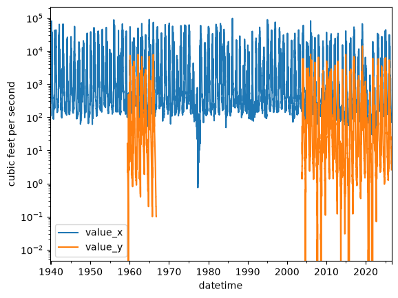
Dropping columns
We can remove columns of data from the dataframe using pandas built in drop() method
[39]:
dfm = dfm.drop(columns=[i for i in list(dfm) if not i.startswith("value")])
dfm.head()
[39]:
| value_x | value_y | |
|---|---|---|
| datetime | ||
| 1939-10-01 | 185.0 | NaN |
| 1939-10-02 | 185.0 | NaN |
| 1939-10-03 | 185.0 | NaN |
| 1939-10-04 | 185.0 | NaN |
| 1939-10-05 | 185.0 | NaN |
Updating column names
Let’s update column names for these gages based on their locations instead of their USGS gage id. First we’ll get name information from the info class and then we’ll use the station name information to remap the column names.
the rename() method accepts a dictionary that is formatted {current_col_name: new_col_name}
[40]:
info.head()
[40]:
| monitoring_location_id | agency_code | agency_name | site_number | site_name | district_code | country_code | country_name | state_code | state_name | ... | construction_date | aquifer_code | national_aquifer_code | aquifer_type_code | well_constructed_depth | hole_constructed_depth | depth_source_code | revision_note | revision_created | revision_modified | |
|---|---|---|---|---|---|---|---|---|---|---|---|---|---|---|---|---|---|---|---|---|---|
| 0 | USGS-11467000 | USGS | U.S. Geological Survey | 11467000 | RUSSIAN R A HACIENDA BRIDGE NR GUERNEVILLE CA | 06 | US | United States of America | 06 | California | ... | NaT | None | NaN | None | NaN | NaN | NaN | WSP 1395: Drainage area at former site. WSP 19... | 2017-11-13T06:00:00+00:00 | 2026-02-05T20:36:31.210000+00:00 |
| 1 | USGS-11467002 | USGS | U.S. Geological Survey | 11467002 | RUSSIAN R A JOHNSONS BEACH A GUERNEVILLE CA | 06 | US | United States of America | 06 | California | ... | NaT | None | NaN | None | NaN | NaN | NaN | NaN | NaN | NaN |
| 2 | USGS-11467006 | USGS | U.S. Geological Survey | 11467006 | RUSSIAN R A VACATION BEACH CA | 06 | US | United States of America | 06 | California | ... | NaT | None | NaN | None | NaN | NaN | NaN | NaN | NaN | NaN |
| 3 | USGS-11467050 | USGS | U.S. Geological Survey | 11467050 | BIG AUSTIN C A CAZADERO CA | 06 | US | United States of America | 06 | California | ... | NaT | None | NaN | None | NaN | NaN | NaN | NaN | NaN | NaN |
| 4 | USGS-11467200 | USGS | U.S. Geological Survey | 11467200 | AUSTIN C NR CAZADERO CA | 06 | US | United States of America | 06 | California | ... | NaT | None | NaN | None | NaN | NaN | NaN | NaN | NaN | NaN |
5 rows × 43 columns
[41]:
remap = {}
for ix, i in enumerate(list(dfm)):
site_no = unique_sites[ix]
desc = info[info.monitoring_location_id == site_no]["site_name"].values[0]
colname = "_".join(desc.lower().split()[:2])
remap[i] = colname
df2 = dfm.rename(columns=remap)
ax = df2.plot()
ax.set_yscale("log");
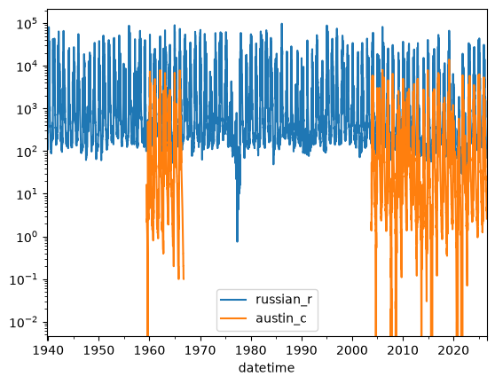
Adding a new column of data to the dataframe
Adding new columns of data is relatively simple in pandas. The call signature is similar to a dictionary where df[“key”] = “some_array_of_values”
Let’s add a year column (water year) to the dataframe by getting the year from the index and adjusting it using np.where()
[42]:
df2['wyear'] = np.where(df2.index.month >=10, df2.index.year + 1, df2.index.year)
Manipulating data
Columns in a pandas dataframe can be manipulated similarly to working with a dictionary of numpy arrays. The discharge data units are \(\frac{ft^3}{s}\), let’s accumulate this to daily discharge in \(\frac {ft^3}{d}\).
The conversion for this is:
$ \frac{1 ft^3}{s} \times `:nbsphinx-math:frac{60s}{min}` \times `:nbsphinx-math:frac{60min}{hour}` \times `:nbsphinx-math:frac{24hours}{day}` \rightarrow `:nbsphinx-math:frac{ft^3}{day}` $
and then convert that to acre-feet (1 acre-ft = 43559.9)
[43]:
conv = 60 * 60 * 24
df2["russian_r_cfd"] = df2.russian_r * conv
df2["russian_r_af"] = df2.russian_r_cfd / 43559.9
df2
# now let's plot up discharge from 2018 - 2026
dfplt = df2[(df2["wyear"] >= 2018) & (df2["wyear"] <= 2026)]
ax = dfplt["russian_r_af"].plot()
ax.set_yscale("log")
ax.set_ylabel("Q, in acre-ft per day");
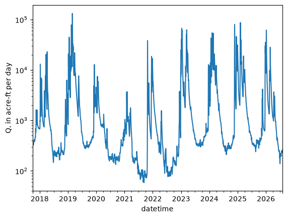
Class exercise 2:
Using the methods described in the notebook. Convert the discharge for "austin_c" from \(\frac{ft^3}{s}\) acre-ft by adding two additional fields to df2 named "austin_c_cfd" and "austin_c_af".
After these two fields have been added to df2 use boolean indexing to create a new dataframe from 2015 through 2020. Finally plot the discharge data (in acre-ft) for “austin_cr”.
bonus exercise try to plot both "russian_r_af" and "austin_c_af" on the same plot
[44]:
df2["austin_c_cfd"] = df2.austin_c * conv
df2["austin_c_af"] = df2.austin_c_cfd / 43559.9
[45]:
dftmp = df2[(df2.wyear >= 2015) & (df2.wyear <= 2020)]
[46]:
ax = dftmp[["russian_r_af", "austin_c_af"]].plot()
plt.legend(loc=0)
plt.yscale("log");
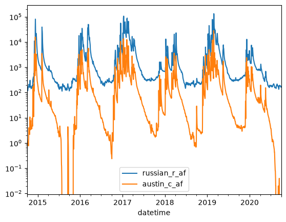
groupby: grouping data and performing mathematical operations on it
groupby() is a powerful method that allows for performing statistical operations over a groups of “common” data within a dataframe.
For this example we’ll use it to get mean daily flows for the watershed. Pandas will group all common days of the year with each other and then calculate the mean value of these via the function .mean(). groupby() also supports other operations such as .median(), .sum(), max(), min(), std(), and other functions.
[47]:
df2["day_of_year"] = df2.index.day_of_year
df2["austin_c_cfd"] = df2.austin_c * conv
df2["austin_c_af"] = df2.austin_c_cfd / 43559.9
df_mean_day = df2.groupby(by=["day_of_year"], as_index=False)[["russian_r_af", "austin_c_af"]].mean()
ax = df_mean_day[["russian_r_af", "austin_c_af"]].plot()
ax.set_yscale("log")
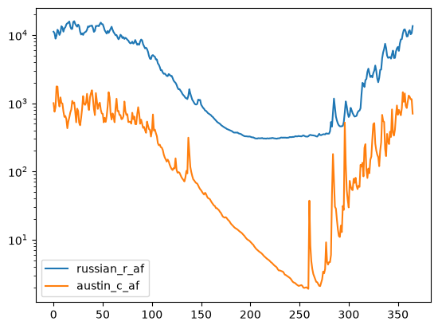
We can see that around March flow starts decreasing heavily and doesn’t recover until sometime in october. What’s going on here? Let’s load some climate data and see what’s happening.
[48]:
cimis_file = data_path / "santa_rosa_CIMIS_83.csv"
df_cimis = pd.read_csv(cimis_file)
drop_list = [i for i in list(df_cimis) if i.startswith("qc")]
df_cimis.drop(columns=drop_list, inplace=True)
df_cimis.head()
[48]:
| Stn Id | Stn Name | CIMIS Region | Date | Jul | ETo (in) | Precip (in) | Sol Rad (Ly/day) | Avg Vap Pres (mBars) | Max Air Temp (F) | Min Air Temp (F) | Avg Air Temp (F) | Max Rel Hum (%) | Min Rel Hum (%) | Avg Rel Hum (%) | Dew Point (F) | Avg Wind Speed (mph) | Wind Run (miles) | Avg Soil Temp (F) | |
|---|---|---|---|---|---|---|---|---|---|---|---|---|---|---|---|---|---|---|---|
| 0 | 83 | Santa Rosa | North Coast Valleys | 1/1/1990 | 1 | 0.00 | 0.30 | 42.0 | 7.7 | 48.7 | 36.8 | 43.6 | 82.0 | 77.0 | 80.0 | 37.9 | 1.3 | 32.1 | 46.3 |
| 1 | 83 | Santa Rosa | North Coast Valleys | 1/2/1990 | 2 | 0.06 | 0.00 | 236.0 | 6.1 | 58.4 | 30.2 | 43.5 | 83.0 | 38.0 | 63.0 | 31.8 | 5.0 | 121.0 | 44.9 |
| 2 | 83 | Santa Rosa | North Coast Valleys | 1/3/1990 | 3 | 0.04 | 0.00 | 225.0 | 5.8 | 63.0 | 26.6 | 39.5 | 84.0 | 37.0 | 70.0 | 30.6 | 1.9 | 44.5 | 43.3 |
| 3 | 83 | Santa Rosa | North Coast Valleys | 1/4/1990 | 4 | 0.03 | 0.01 | 190.0 | 6.3 | 56.7 | 25.6 | 38.6 | 84.0 | 58.0 | 79.0 | 32.8 | 1.3 | 30.2 | 42.8 |
| 4 | 83 | Santa Rosa | North Coast Valleys | 1/5/1990 | 5 | 0.04 | 0.00 | 192.0 | 7.2 | 59.1 | 30.9 | 41.8 | 83.0 | 63.0 | 80.0 | 36.2 | 1.9 | 45.2 | 43.7 |
[49]:
df_mean_clim = df_cimis.groupby(by=["Jul"], as_index=False)[["ETo (in)", "Precip (in)"]].mean()
df_mean_clim = df_mean_clim.rename(columns={"Jul": "day_of_year"})
df_mean_clim.head()
[49]:
| day_of_year | ETo (in) | Precip (in) | |
|---|---|---|---|
| 0 | 1 | 0.031081 | 0.316486 |
| 1 | 2 | 0.030270 | 0.190541 |
| 2 | 3 | 0.030541 | 0.199714 |
| 3 | 4 | 0.030811 | 0.218919 |
| 4 | 5 | 0.034054 | 0.190270 |
Merging two DataFrames with an inner join
Inner joins can be made in pandas with the merge() method. An “inner join” joins two dataframes on a common key or values; when a key or value exists in one dataframe, but not the other, that row of data will be excluded from the joined dataframe.
There are a number of other ways to join dataframes in pandas. Detailed examples and discussion of the different merging methods can be found here
[50]:
df_merged = pd.merge(df_mean_day, df_mean_clim, how="inner", on=["day_of_year",])
df_merged.head()
[50]:
| day_of_year | russian_r_af | austin_c_af | ETo (in) | Precip (in) | |
|---|---|---|---|---|---|
| 0 | 1 | 11219.290504 | 1005.610242 | 0.031081 | 0.316486 |
| 1 | 2 | 10649.121056 | 752.725034 | 0.030270 | 0.190541 |
| 2 | 3 | 8874.275146 | 882.342521 | 0.030541 | 0.199714 |
| 3 | 4 | 9827.665764 | 1770.064229 | 0.030811 | 0.218919 |
| 4 | 5 | 12011.996798 | 1756.119073 | 0.034054 | 0.190270 |
[51]:
cols = [i for i in list(df_merged) if i != "day_of_year"]
ax = df_merged[cols].plot()
ax.set_yscale("log")
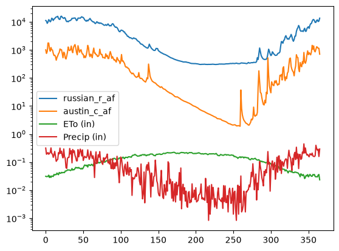
This starts to make a little more sense! We can see that this area gets most of it’s precipitation in the winter and early spring. The evapotranspiration curve shows what we’d expect: that there is more evapotranspiration in the summer than the winter.
Is there anything else we can look at that might give us more insights into this basin?
Let’s try looking at long term, yearly trends to see what’s there.
[52]:
wyear = []
for dstr in df_cimis.Date.values:
mo, d, yr = [int(i) for i in dstr.split("/")]
if mo < 10:
wyear.append(yr)
else:
wyear.append(yr + 1)
df_cimis["wyear"] = wyear
df_cimis.head()
[52]:
| Stn Id | Stn Name | CIMIS Region | Date | Jul | ETo (in) | Precip (in) | Sol Rad (Ly/day) | Avg Vap Pres (mBars) | Max Air Temp (F) | Min Air Temp (F) | Avg Air Temp (F) | Max Rel Hum (%) | Min Rel Hum (%) | Avg Rel Hum (%) | Dew Point (F) | Avg Wind Speed (mph) | Wind Run (miles) | Avg Soil Temp (F) | wyear | |
|---|---|---|---|---|---|---|---|---|---|---|---|---|---|---|---|---|---|---|---|---|
| 0 | 83 | Santa Rosa | North Coast Valleys | 1/1/1990 | 1 | 0.00 | 0.30 | 42.0 | 7.7 | 48.7 | 36.8 | 43.6 | 82.0 | 77.0 | 80.0 | 37.9 | 1.3 | 32.1 | 46.3 | 1990 |
| 1 | 83 | Santa Rosa | North Coast Valleys | 1/2/1990 | 2 | 0.06 | 0.00 | 236.0 | 6.1 | 58.4 | 30.2 | 43.5 | 83.0 | 38.0 | 63.0 | 31.8 | 5.0 | 121.0 | 44.9 | 1990 |
| 2 | 83 | Santa Rosa | North Coast Valleys | 1/3/1990 | 3 | 0.04 | 0.00 | 225.0 | 5.8 | 63.0 | 26.6 | 39.5 | 84.0 | 37.0 | 70.0 | 30.6 | 1.9 | 44.5 | 43.3 | 1990 |
| 3 | 83 | Santa Rosa | North Coast Valleys | 1/4/1990 | 4 | 0.03 | 0.01 | 190.0 | 6.3 | 56.7 | 25.6 | 38.6 | 84.0 | 58.0 | 79.0 | 32.8 | 1.3 | 30.2 | 42.8 | 1990 |
| 4 | 83 | Santa Rosa | North Coast Valleys | 1/5/1990 | 5 | 0.04 | 0.00 | 192.0 | 7.2 | 59.1 | 30.9 | 41.8 | 83.0 | 63.0 | 80.0 | 36.2 | 1.9 | 45.2 | 43.7 | 1990 |
[53]:
df2.head()
[53]:
| russian_r | austin_c | wyear | russian_r_cfd | russian_r_af | austin_c_cfd | austin_c_af | day_of_year | |
|---|---|---|---|---|---|---|---|---|
| datetime | ||||||||
| 1939-10-01 | 185.0 | NaN | 1940 | 15984000.0 | 366.942991 | NaN | NaN | 274 |
| 1939-10-02 | 185.0 | NaN | 1940 | 15984000.0 | 366.942991 | NaN | NaN | 275 |
| 1939-10-03 | 185.0 | NaN | 1940 | 15984000.0 | 366.942991 | NaN | NaN | 276 |
| 1939-10-04 | 185.0 | NaN | 1940 | 15984000.0 | 366.942991 | NaN | NaN | 277 |
| 1939-10-05 | 185.0 | NaN | 1940 | 15984000.0 | 366.942991 | NaN | NaN | 278 |
.aggregate()
The pandas .aggregate() can be used with .groupy() to perform multiple statistical operations.
Example usage could be:
agdf = df2.groupby(by=["day_of_year"], as_index=False)["austin_c_af"].aggregate(["min", "max", "mean", "std"])
And would return a dataframe grouped by the day of year and take the min, max, mean, and standard deviation of these data.
Class exercise 3: groupy, aggregate, and merge
For this exercise we need to produce yearly mean and standard deviation flows for the russian_r_af variable and merge the data with yearly mean precipitation and evapotranspiration
Hints:
df2anddf_cimisare the dataframes these operations should be performed onuse
.groupby()to group by the year and doprecipandEToin separate groupby routinesrename the columns in the ETo aggregated dataframe and the Precip dataframe to
mean_et,std_et,mean_precip,std_precipmeanandstdcan be used to calculate mean and std flows
Name your final joined dataframe df_yearly
[54]:
dfg0 = df2.groupby(by=["wyear"], as_index=False)["russian_r_af"].aggregate(["mean", "std", "sum"])
dfg1 = df_cimis.groupby(by=["wyear"], as_index=False)["ETo (in)"].aggregate(["mean", "std", "sum"])
dfg2 = df_cimis.groupby(by=["wyear"], as_index=False)["Precip (in)"].aggregate(["mean", "std", "sum"])
dfm1 = pd.merge(dfg0, dfg1, on=["wyear"], suffixes=(None, "_et"))
df_yearly = pd.merge(dfm1, dfg2, on=["wyear"], suffixes=(None, "_precip"))
df_yearly.set_index("wyear", inplace=True)
[55]:
df_yearly.head()
[55]:
| mean | std | sum | mean_et | std_et | sum_et | mean_precip | std_precip | sum_precip | |
|---|---|---|---|---|---|---|---|---|---|
| wyear | |||||||||
| 1990 | 1388.134060 | 2703.398315 | 5.066689e+05 | 0.160513 | 0.080539 | 43.82 | 0.067473 | 0.284019 | 18.42 |
| 1991 | 2105.130611 | 7210.539138 | 7.683727e+05 | 0.113671 | 0.067419 | 41.49 | 0.081642 | 0.353434 | 27.84 |
| 1992 | 2180.262423 | 5581.173315 | 7.979760e+05 | 0.117268 | 0.067521 | 42.92 | 0.086940 | 0.233645 | 31.82 |
| 1993 | 5746.248446 | 11726.314669 | 2.097381e+06 | 0.122712 | 0.077676 | 44.79 | 0.128329 | 0.312310 | 46.84 |
| 1994 | 1528.091360 | 3052.871464 | 5.577533e+05 | 0.121781 | 0.073195 | 44.45 | 0.060168 | 0.225893 | 21.48 |
[ ]:
Lets examine the long term flow record for the Russian River
[56]:
df_y_flow = df2.groupby(by=["wyear"], as_index=False)["russian_r_af"].aggregate(["mean", "std"])
fig = plt.figure(figsize=(12,4))
lower_ci = df_y_flow["mean"] - 2 * df_y_flow['std']
lower_ci = np.where(lower_ci < 0, 0, lower_ci)
upper_ci = df_y_flow["mean"] + 2 * df_y_flow['std']
ax = df_y_flow["mean"].plot(style="b.-")
ax.fill_between(df_y_flow.index, lower_ci, upper_ci, color="b", alpha=0.5)
ax.set_yscale("log");
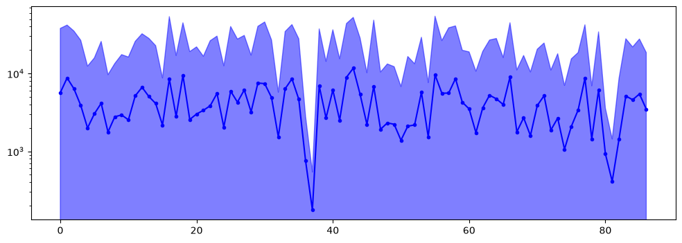
From this plot it looks like the long term trend in yearly discharge in the Russian River has been decreasing. We will revisit and test this later.
First let’s see if there are any relationships between yearly discharge and climate
[57]:
dfg0 = df2.groupby(by=["wyear"], as_index=False)["russian_r_af"].aggregate(["mean", "std", "sum"])
dfg1 = df_cimis.groupby(by=["wyear"], as_index=False)["ETo (in)"].aggregate(["mean", "std", "sum"])
dfg2 = df_cimis.groupby(by=["wyear"], as_index=False)["Precip (in)"].aggregate(["mean", "std", "sum"])
dfm1 = pd.merge(dfg0, dfg1, on=["wyear"], suffixes=(None, "_et"))
df_yearly = pd.merge(dfm1, dfg2, on=["wyear"], suffixes=(None, "_precip"))
df_yearly.set_index("wyear", inplace=True)
fig = plt.figure(figsize=(12,4))
lower_ci = df_yearly["mean"] - 2 * df_yearly['std']
lower_ci = np.where(lower_ci < 0, 0, lower_ci)
upper_ci = df_yearly["mean"] + 2 * df_yearly['std']
ax = df_yearly["mean"].plot(style="b.-", label="flow_af")
ax.fill_between(df_yearly.index.values, lower_ci, upper_ci, color="b", alpha=0.5)
ax.set_yscale("log")
ax2 = ax.twinx()
ax2.plot(df_yearly.index.values, df_yearly.sum_precip.values, "k--", lw=1.5, label="Precip")
ax2.plot(df_yearly.index.values, df_yearly.sum_et.values, "r.--", lw=1.5, label="ET")
plt.legend()
plt.show();
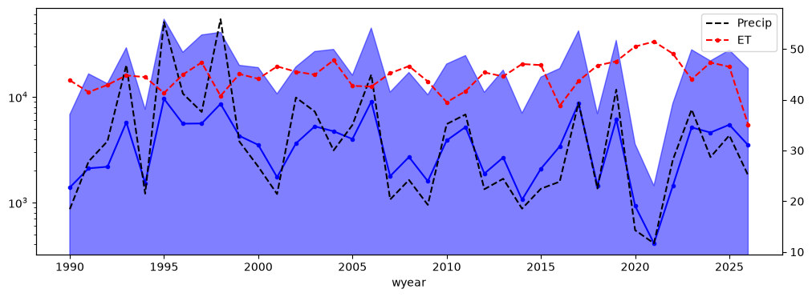
As expected, precipitation is the main driver of the yearly discharge regime here
Baseflow separation
Baseflow separation is a method to separate the quick response hydrograph (storm runoff) from the long term flow. We’re going to go back to the complete daily dataset to perform this operation. The following cell contains a low pass filtration method that is used for digital baseflow separation. We’ll use this method in our analysis
[58]:
def _baseflow_low_pass_filter(arr, beta, enforce):
"""
Private method to apply digital baseflow separation filter
(Lyne & Hollick, 1979; Nathan & Mcmahon, 1990;
Boughton, 1993; Chapman & Maxwell, 1996).
This method should not be called by the user!
Method removes "spikes" which would be consistent with storm flow
events from data.
Parameters
----------
arr : np.array
streamflow or municipal pumping time series
beta : float
baseflow filtering parameter that ranges from 0 - 1
values in 0.8 - 0.95 range used in literature for
streamflow baseflow separation
enforce : bool
enforce physical constraint of baseflow less than measured flow
Returns
-------
np.array of filtered data
"""
# prepend 10 records to data for initial spin up
# these records will be dropped before returning data to user
qt = np.zeros((arr.size + 10,), dtype=float)
qt[0:10] = arr[0:10]
qt[10:] = arr[:]
qdt = np.zeros((arr.size + 10,), dtype=float)
qbf = np.zeros((arr.size + 10,), dtype=float)
y = (1. + beta) / 2.
for ix in range(qdt.size):
if ix == 0:
qbf[ix] = qt[ix]
continue
x = beta * qdt[ix - 1]
z = qt[ix] - qt[ix - 1]
qdt[ix] = x + (y * z)
qb = qt[ix] - qdt[ix]
if enforce:
if qb > qt[ix]:
qbf[ix] = qt[ix]
else:
qbf[ix] = qb
else:
qbf[ix] = qb
return qbf[10:]
def baseflow_low_pass_filter(arr, beta=0.9, T=1, enforce=True):
"""
User method to apply digital baseflow separation filter
(Lyne & Hollick, 1979; Nathan & Mcmahon, 1990;
Boughton, 1993; Chapman & Maxwell, 1996).
Method removes "spikes" which would be consistent with storm flow
events from data.
Parameters
----------
arr : np.array
streamflow or municipal pumping time series
beta : float
baseflow filtering parameter that ranges from 0 - 1
values in 0.8 - 0.95 range used in literature for
streamflow baseflow separation
T : int
number of filtering passes to apply to the data
enforce : bool
enforce physical constraint of baseflow less than measured flow
Returns
-------
np.array of baseflow
"""
for _ in range(T):
arr = _baseflow_low_pass_filter(arr, beta, enforce)
return arr
Class exercise 4: baseflow separation
Using the full dataframe discharge dataframe, df2, get the baseflows for the Russian River (in acre-ft) and add these to the dataframe as a new column named russian_bf_af.
The function baseflow_low_pass_filter() will be used to perform baseflow. This function takes a numpy array of stream discharge and runs a digital low pass filtration method to calculate baseflow.
After performing baseflow separation plot both the baseflow and the total discharge for the years 2015 - 2017.
Hints:
make sure to use the
.valuesproperty when you get discharge data from the pandas dataframefeel free to play with the input parameters
betaandT.betais commonly between 0.8 - 0.95 for hydrologic problems.Tis the number of filter passes over the data, therefore increasingTwill create a smoother profile. I recommend starting with aTvalue of around 5 and adjusting it to see how it changes the baseflow profile.
[59]:
df2["russian_bf_af"] = baseflow_low_pass_filter(df2["russian_r_af"].values, beta=0.9, T=5)
[60]:
df2[["russian_r_af", "russian_bf_af"]].plot()
plt.legend(loc=0)
plt.yscale("log");
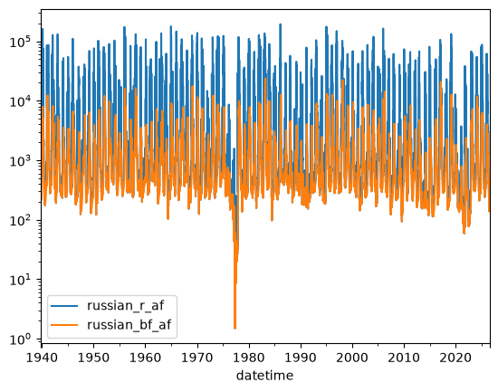
Looking at trends and seasonal cycles in the data with statsmodels
statsmodels is a Python module that provides classes and functions for the estimation of many different statistical models, as well as for conducting statistical tests, and statistical data exploration. For more information on statsmodels and it’s many features visit the getting started guide
For this example we’ll be using time series analysis to perform a seasonal decomposition using moving averages. The statsmodels function seasonal_decompose will perform this analysis and return the data trend, seasonal fluctuations, and residuals.
[61]:
df2["russian_bf_af"] = baseflow_low_pass_filter(df2["russian_r_af"].values, beta=0.9, T=5)
# drop nan values prior to running decomposition
dfsm = df2[df2['russian_bf_af'].notna()]
dfsm.head()
# decompose
decomposition = sm.tsa.seasonal_decompose(dfsm["russian_bf_af"], period=365, model="additive")
decomposition.plot()
mpl.rcParams['figure.figsize'] = [14, 14];
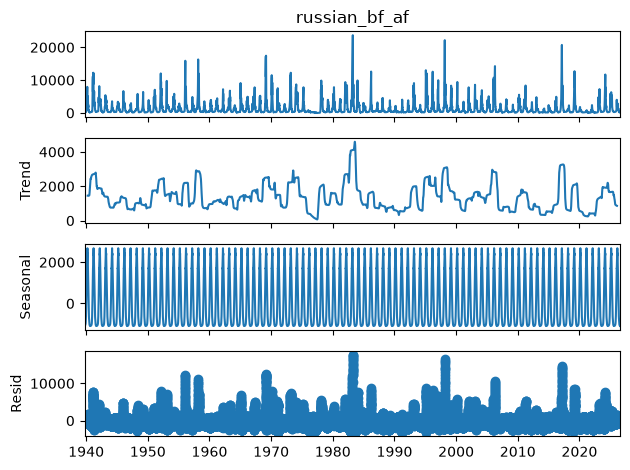
Now let’s plot our baseflow trend against the baseflow we calculated
[62]:
fig, ax = plt.subplots(figsize=(8, 8))
ax = df2["russian_r_af"].plot(ax=ax)
ax.plot(decomposition.trend.index.values, decomposition.trend.values, "r-", lw=1.5)
ax.set_yscale('log');
/tmp/ipykernel_10006/1694153108.py:4: UserWarning: This axis already has a converter set and is updating to a potentially incompatible converter
ax.plot(decomposition.trend.index.values, decomposition.trend.values, "r-", lw=1.5)
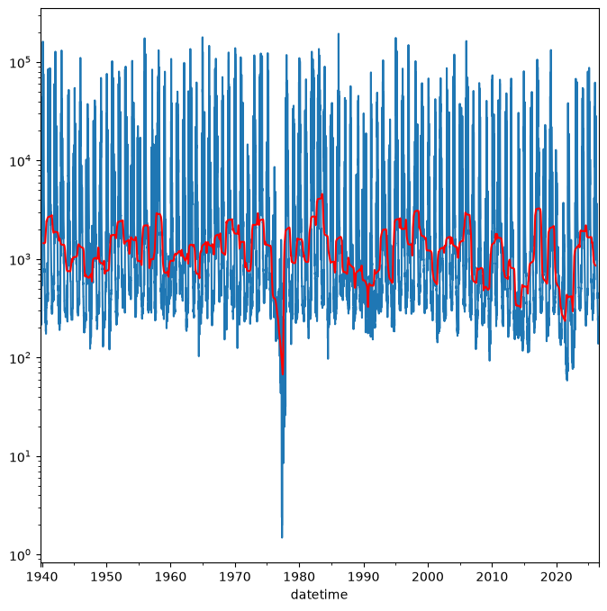
What’s going on at the end of the 1970’s? Why is the baseflow trend so low and peak flows are also low?
From “California’s Most Significant Droughts”, Chapter 3
The setting for the 1976-77 drought differed significantly from the dry times of the 1920s-30s. Although only a two-year event, its hydrology was severe. Based on 114 years of computed statewide runoff, 1977 occupies rank 114 (driest year) and 1976 is in rank 104. The drought was notable for the impacts experienced by water agencies that were unprepared for such conditions. One reason for the lack of preparedness was the perception of relatively ample water supplies in most areas of the state.
We can also see the analysis that there is an overall reduction in baseflow from 1940’s to the 2020’s
Writing yearly plots of data to a PDF document
We can write the plots we make with pandas to a multipage pdf using matplotlib’s PdfPages. For this example we’ll make yearly plots of all of the discharge, baseflow, and baseflow trend and bundle them into a single pdf document.
[63]:
# add the decomposition trend to the dataframe to make plotting easy
df2["baseflow_trend"] = decomposition.trend
pdf_file = data_path / "all_water_years_russian.pdf"
with PdfPages(pdf_file) as outpdf:
for wyear in sorted(df2.wyear.unique()):
plt.figure()
tdf = df2[df2.wyear == wyear]
tdf[["russian_r_af", "russian_bf_af", "baseflow_trend"]].plot()
plt.xlabel("date")
plt.ylabel("acre-feet")
plt.ylim([1, 300000])
plt.yscale("log")
plt.tight_layout()
outpdf.savefig()
plt.close('all')
Go into the “data/pandas” directory and open up the file “all_years_russian.pdf” to check out the plots.
If time permits:
Some powerful analysis using fourier analysis to extract the data’s signal.
Some background for your evening viewing: https://youtu.be/spUNpyF58BY
We have to detrend the data for fast fourier transforms to work properly. Here’s a discussion on why:
https://groups.google.com/forum/#!topic/comp.dsp/kYDZqetr_TU
Fortunately we can easily do this in python using scipy!
https://docs.scipy.org/doc/scipy/reference/generated/scipy.signal.detrend.html
Let’s create a new dataframe with only the data we’re interested in analyzing.
[64]:
df_data = df2[["russian_r_af", "wyear"]]
df_data = df_data.rename(columns={"russian_r_af": "Q"})
df_data.describe()
[64]:
| Q | wyear | |
|---|---|---|
| count | 31716.000000 | 31716.000000 |
| mean | 4273.961566 | 1982.916604 |
| std | 11283.899655 | 25.066835 |
| min | 1.487607 | 1940.000000 |
| 25% | 345.124759 | 1961.000000 |
| 50% | 676.365189 | 1983.000000 |
| 75% | 2697.526854 | 2005.000000 |
| max | 193785.568837 | 2026.000000 |
But first let’s also set the water year by date on this dataframe and drop nan values from the dataframe
[65]:
df_data['water_year'] = df_data.index.shift(30+31+31,freq='d').year
df_data.dropna(inplace=True)
df_data["detrended"] = detrend(df_data.Q.values)
/tmp/ipykernel_10006/608845639.py:1: Pandas4Warning: 'd' is deprecated and will be removed in a future version, please use 'D' instead.
df_data['water_year'] = df_data.index.shift(30+31+31,freq='d').year
[66]:
fig = plt.figure(figsize=(12,6))
ax0 = plt.subplot(3,1,1)
ax0.set_yscale("log")
plt.plot(df_data.index.values, df_data.detrended.values)
plt.title('detrended signal')
ax1 = plt.subplot(3,1,2)
ax1.set_yscale("log")
plt.plot(df_data.index.values, df_data.Q.values)
plt.title('Raw Signal')
plt.subplot(3,1,3)
plt.plot(df_data.index.values, df_data.Q.values - df_data.detrended.values)
plt.title('Difference')
plt.tight_layout()
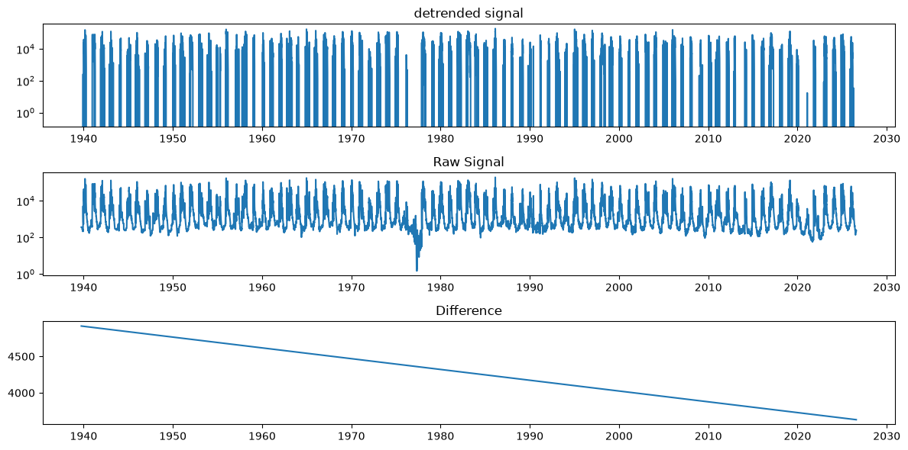
Evaluate and plot the Period Spectrum to see timing of recurrence
Here we’ve created a function that performs fast fourier transforms and then plot’s the spectrum for signals of various lengths.
[67]:
def fft_and_plot(df, plot_dominant_periods=4):
N = len(df)
yf = np.fft.fft(df.detrended)
yf = np.abs(yf[:int(N / 2)])
# get the right frequency
# https://docs.scipy.org/doc/numpy/reference/generated/numpy.fft.fftfreq.html#numpy.fft.fftfreq
d = 1. # day
f = np.fft.fftfreq(N, d)[:int(N/2)]
f[0] = .00001
per = 1./f # days
fig = plt.figure(figsize=(12,6))
ax = plt.subplot(2,1,1)
plt.plot(per, yf)
plt.xscale('log')
top=np.argsort(yf)[-plot_dominant_periods:]
j=(10-plot_dominant_periods)/10
for i in top:
plt.plot([per[i], per[i]], [0,np.max(yf)], 'r:')
plt.text(per[i], j*np.max(yf), f"{per[i] :.2f}")
j+=0.1
plt.title('Period Spectrum')
plt.grid()
ax.set_xlabel('Period (days)')
plt.xlim([1, 1e4])
plt.subplot(2,1,2)
plt.plot(df.index.values, df.Q.values)
plt.title('Raw Signal')
plt.tight_layout()
Now let’s look at the whole signal
[68]:
fft_and_plot(df_data)
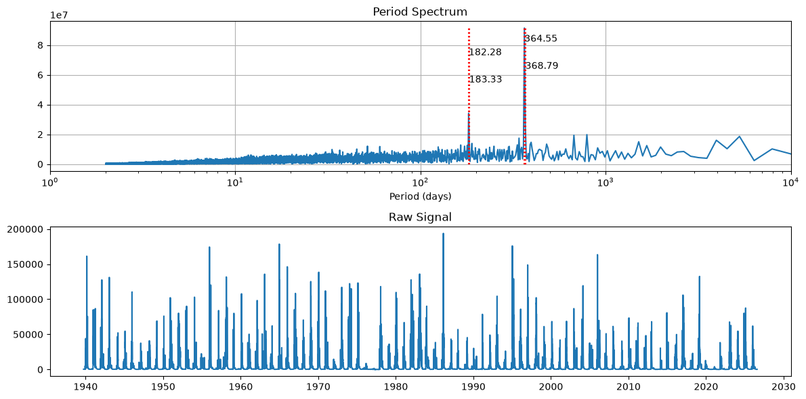
We see a strong annual frequency that corresponds to spring snowmelt from the surrounding mountain ranges. The second strongest frequency is biannually, and is likely due to the onset of fall and winter rains
Okay, what about years before dams were installed on the Russian River.
Let’s get in the wayback machine and look at only the years prior to 1954!
[69]:
fft_and_plot(df_data[df_data.index.year < 1954])
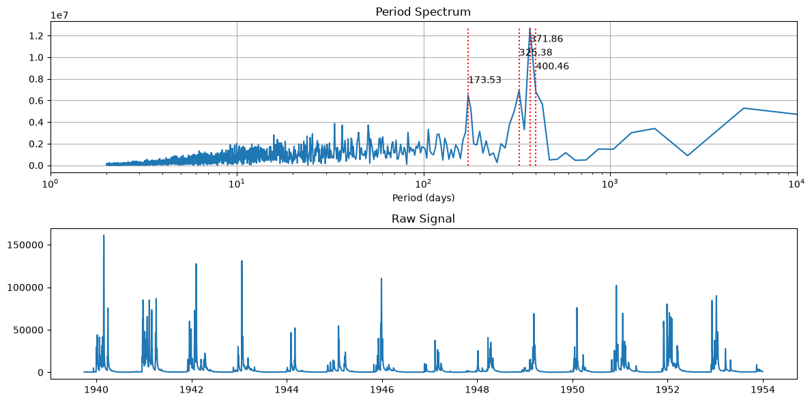
The binanual and annual signals have a much wider spread, which suggests that peak runoff was a little more variable in it’s timing compared to the entire data record.
What if we focus in on after 1954?
[70]:
fft_and_plot(df_data[(df_data.index.year > 1954)])
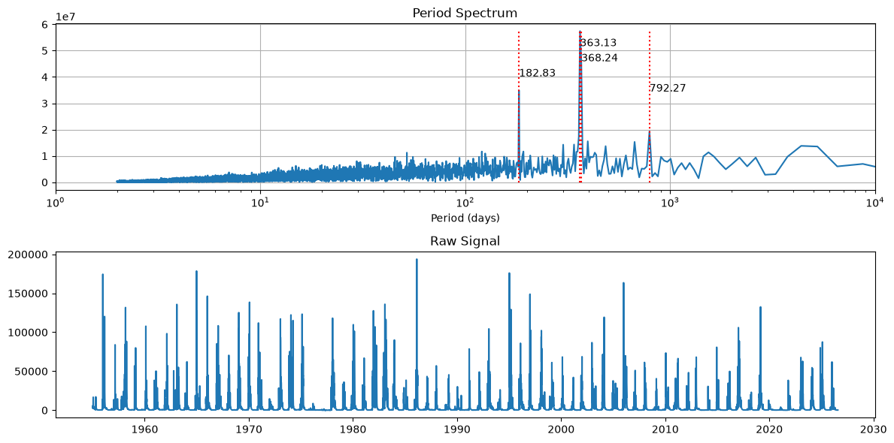
It looks like flows are more controlled with a tighter periods.
So post dam construction, flows are likely more controlled with regular seasonal release schedules.
[ ]: